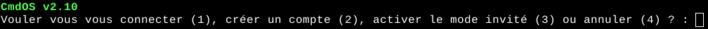
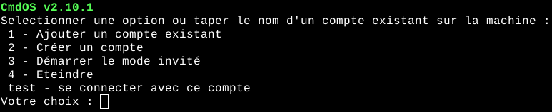

La page de connexion est la première chose que vous verrez en arivant sur CmdOS, la pemière fois elle ressemble à cela :
Voyons voir les diférentes options qu'il nous propose :
1) Se connecter avec un compte existant : ce compte doit être déja créé
2) Se créer un compte : le mot de passe et le nom d'utilisateur ne doivent pas dépasser 50 caractères. Le mot de passe ne doit pas être "shutdown". Le nom d'uilisateur ne doit pas être déja pris et ne doit pas être 1, 2, 3 ou 4. Le nom d'utilisateur ne doit pas commencé par "local-"
3) Activer le mode invité : voir le mode invité.
4) Se créer un compte local : se créer un compte entièrement local qui ne requiert pas de connexion internet. Les mêmes règles s'appliquent pour les noms d'utilisateur et le mot de passe.
5) Annuler : arrêter le programme.
Une fois que vous avez ajouté un compte, elle se transforme en cela :
Il vous proposera toujours les mêmes options avec en plus les noms des comptes enregistrés sur la machine.
Il vous suffira de taper un nom d'utilisateur et son mot de passe pour vous y connecté.
Une fois connecté, vous atterirez sur la page de l'entrée utilisateur.